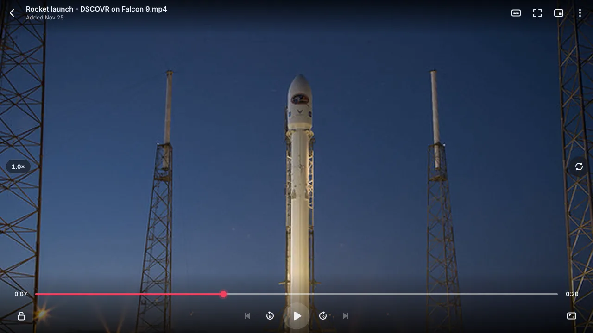
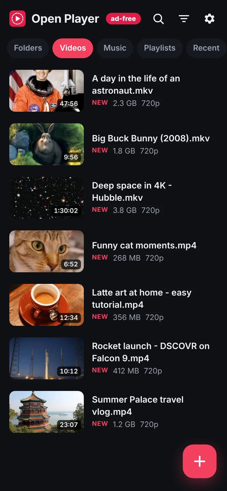

- No ads, ever
- No sign-in
- Code public on GitHub
- Every release virus-scanned
The video and music player with no ads.
Open Player is free and open source. It has the gestures, subtitles and equalizer you know from MX Player and VLC, and no ads, no account and no tracking.
Also for Android Windows Mac Ubuntu iPhone and iPad
On iPhone or iPad, open the web app in Safari, then tap Share › Add to Home Screen. Apple only allows App Store apps, so there’s no download. Other Linux: AppImage. Very old Android phone? Get the 32-bit version.
You don’t have to take our word for it
Any app can say it has no ads. Here’s what you can check for yourself.
- The code is public
- Every line is on GitHub under the GPL-3.0 licence, so anyone can read it. See the code
- No ads, no trackers
- No ad networks, no analytics and no sign-in. Your videos never leave your device.
- Built by GitHub, not by hand
- Each APK is built automatically from the public code. See all releases
- Scanned for viruses
- Each release is scanned by dozens of antivirus engines on VirusTotal, and the report is public. See the result
- Permissions you can understand
- It reads your videos and music to list them. The internet is only for streams and links you open. “All files access” is optional, for hidden folders.
- A download you can verify
- Compare the file’s checksum and signing fingerprint with the ones on this page. How to check
Open source, so it’s yours to reuse
Every line of Open Player is public on GitHub. Read it, check for yourself that there are no ads or trackers, or build your own player from it.
- Use it
- Free for everyone, for anything, forever.
- Study it
- The full code for Android, desktop and web is on GitHub.
- Change it
- Fork it, add features, rebrand it for your own app.
- Share it
- Pass on your version too. Keep it open source under the same GPL-3.0 licence and credit the original.
The best of MX Player, VLC and Next Player, in one open app
- Like MX PlayerSwipe gestures for brightness, volume and seeking, double-tap to skip, a PIN-locked private folder and a kids mode.
- Like VLCPlays almost any file: MKV, AVI, HEVC, AC3, DTS and built-in subtitles, using FFmpeg.
- Like Next PlayerGoogle’s modern Media3 player engine on Android, with audio-language and subtitle-track choice.
- Only in Open PlayerThe same player on Android, Windows, Mac, Ubuntu and the web, and downloads you can verify.
Built on open source: FFmpeg, Android Media3, Capacitor and Electron.
Open Player next to MX Player, VLC and Next Player
All four are good players, and VLC and Next Player are ad-free too. Here is an honest side-by-side of the Android versions.
Swipe the table sideways to see all four players.
| Open Player | MX Playerfree version | VLC | Next Player | |
|---|---|---|---|---|
| Ads and privacy | ||||
| Ads | None | YesBanners, pop-ups and video ads; paid Pro removes most | None | None |
| Ad networks and trackers inside | None | 9 ad networksPlus analytics such as AppsFlyer, CleverTap and Firebase | None | None |
| Open source | GPL-3.0 | No | GPL / LGPL | GPL-3.0 |
| Prove your copy is genuine | Built inChecksum, signing fingerprint and virus scan on this site; “Verify app” screen in the app | Play Store only | App storesPlay Store, F-Droid | F-Droid |
| Private folder with PIN | Yes | Yes | No | No |
| Playing | ||||
| Format support | Wide in the Android and desktop appsMKV, AVI, x265, TS and VOB with AC3, DTS and TrueHD sound (FFmpeg). The web app plays what the browser plays. | Very wide | Widest | WideIncluding AC3, DTS and TrueHD audio |
| Built-in subtitles and audio languages | Yes, in the Android and desktop appsAndroid: SRT, ASS and PGS tracks. Desktop: text tracks. Web app: .srt and .vtt files | Yes | Yes | Yes |
| Gestures, picture-in-picture, speed, screen lock | Yes | Yes | Yes | Yes |
| Night audio mode | YesSofter explosions, clearer dialogue | No | Desktop onlyCompressor filter | No |
| Resume after moving or renaming a file | Yes | No | No | No |
| Your phone and family | ||||
| Kids mode | YesChosen folders, daily time limit, PIN to leave | Kids lockLocks the screen during a video | No | No |
| Storage cleaner | YesDuplicate copies, watched and largest videos | No | No | No |
| Help with Telegram downloads | Built inStep-by-step guide, “Open with”, hidden-folder search | Open with | Open with | Open with |
| Cache you can see and clear | YesStorage meter, one-tap refresh | Android settings | Android settings | Android settings |
| Runs in a browser on any device | YesAndroid and desktop apps, plus an installable web app for iPhone and any browser | No | Separate appsOne per system | Android only |
Android versions, from public information as of November 2026: MX Player’s ad networks and trackers as listed by AppGoblin; Next Player’s features from its F-Droid page. Features change; tell us if something here is out of date.
Pick Open Player if you want
- No ads and nothing tracking you, with the comfort features MX Player users expect.
- The same player on your phone, iPhone and computer.
- Telegram videos without hunting for them.
- A player you can hand to your kids, with folders and a time limit you set.
- To check for yourself that the app is genuine.
When another player is better
VLC plays from home network shares and casts to TVs, and still handles the oddest old formats such as WMV and RealMedia. In the web app on iPhone or a computer, formats are limited to what the browser can play; the Android app has its own FFmpeg engine for MKV, AVI and surround sound.
What’s inside
Plays MKV, MP4, AVI, MOV, WebM, TS and more, with HEVC, AV1, Dolby AC3, DTS and TrueHD sound, music in MP3, FLAC and Opus, and SRT, ASS and PGS subtitles.
Try night mode
Loud scenes come down, quiet voices come up, so you can watch late without waking anyone.
Watching
- Plays almost anythingMKV, AVI, TS and VOB with AC3, DTS and TrueHD sound, on Android
- Audio languages and subtitlesPick the dub or the original, and subtitle tracks inside the file
- Subtitles that read right.srt and .vtt files, fixed automatically in 18 text encodings
- Frame previewSee the picture while you seek
- Picture tuningAspect ratio, zoom, contrast, colour, mirror
Sound
- Equalizer10 bands and 12 presets
- Volume boostUp to 200%
- Night modeQuieter explosions, clearer voices
- Audio delayFix out-of-sync sound, saved per video
- Music librarySongs, albums, artists and a mini player
Organizing
- Your whole libraryThe Android app finds every video and song
- Playlists and a play queuePlay next, reorder, shuffle
- Bookmarks and A-B repeatMark moments, loop a scene
- Rename, delete, sortRight from the list
- Clean up storageDuplicates and finished videos
Privacy and family
- Private folderHidden behind a 4-digit PIN
- Kids modeChosen folders and a daily time limit
- Resume after movesRemembers where you stopped, even after renaming
- Headphone awarePauses when they disconnect
- Hidden foldersFinds videos other apps hide (.nomedia)
Open Player on your computer
Browsers can’t decode HEVC (x265) video or AC3, DTS and TrueHD sound, which most MKV downloads use. The desktop app has FFmpeg built in, so those files play, with audio-language choice and the subtitles inside the file.
Ubuntu: sudo apt install ./OpenPlayer-linux-amd64.deb, or make the AppImage executable and double-click it. The Windows and Mac builds aren’t signed with a paid certificate, so the first launch shows a warning: choose “More info › Run anyway” on Windows, or right-click › Open on a Mac. Checksums are on the desktop release page.
Playing in a minute
Install or open
Download the Android app above, or open the web version and choose Install or Add to Home Screen in your browser.
Show your media
In the Android app, tap Show all my videos & music and allow access once. Prefer not to? Choose I’ll add files myself.
Play with gestures
Tap a video and control it with swipes and taps.

Android
The app (recommended), or Chrome menu, then Install app.
iPhone and iPad
Safari, Share, then Add to Home Screen.
Windows, Linux, ChromeOS
Chrome or Edge, then the install icon in the address bar.
Mac
Safari, File, then Add to Dock. Or Chrome, then Install.
What happens to your data? Almost nothing.
Open Player runs entirely on your device. Here is exactly what it keeps and what it never does.
It never
- Uploads your videos, music or file names
- Shows ads or loads ad networks
- Uses analytics, trackers or fingerprinting
- Asks you to sign in or make an account
- Sells or shares anything. There’s nothing to share.
It keeps on your device
- App files, so it opens instantly and works offline
- Thumbnails, so your library loads fast
- Resume points, bookmarks, playlists and settings
- Your PIN, only as a one-way code, never the PIN itself
- Clear any of it in Settings › Storage & cache
The internet is only used to load or update the app itself, and to play network links you choose to open. Android permissions are optional: without them you can still add files yourself.
Check that your copy is genuine
Every APK is built by GitHub from the public source, scanned for viruses and signed with the same key. Compare these details before you install. If anything doesn’t match, don’t install it.
- Latest version
- —
- Virus scan
- —
- APK SHA-256 checksum
—- Signing certificate SHA-256
—- Build provenance
- —Proof from GitHub that the APK was built from the published source, unchanged.
Verification details appear here after the next release build. Until then, see the latest release notes.
Before installing: check the file
Run this where you downloaded the APK. The result must equal the checksum above.
- Windows
certutil -hashfile OpenPlayer.apk SHA256 - Mac
shasum -a 256 OpenPlayer.apk - Linux
sha256sum OpenPlayer.apk
After installing: check the app
Open Player, then Settings › About › Verify app, shows the app’s signing certificate. It must equal the fingerprint above. The Google Play edition is re-signed by Google, so its fingerprint differs; Play checks that copy for you.
What people say
Reviews from people using Open Player. Every review is read before it appears here, and anyone can see them on GitHub.
Loading reviews…
Questions
Is it really free? What’s the catch?
Yes, completely free and open source, with no ads and no paid tier. It doesn’t collect data, so there’s nothing to sell.
Android app or web version: which should I use?
On Android, use the app: it shows all your videos and music automatically, plays more formats, opens files from other apps and finds hidden folders. On computers, iPhones and iPads, use the web version; it has the same player, and you add files yourself.
Why can’t I see my Telegram downloads?
Newer Telegram versions and Plus Messenger keep downloads in a private folder that Android doesn’t let any other app open, including VLC and MX Player. In Telegram, use Share or Open with, then Open Player, to play them straight away, or “Save to Downloads” so they appear in your library. The app has a step-by-step guide in Settings.
Android says “install unknown apps”. Is that safe?
Android shows this for any app that isn’t from the Play Store. Allow it once for your browser or file manager, and turn it off again afterwards if you like. To be sure your copy is genuine, compare its checksum and signing fingerprint with the ones in Check that your copy is genuine.
Which formats does it play?
The Android app plays MP4, MKV, WebM, MOV, AVI, FLV, TS, M2TS, MPEG and VOB, including AC3, E-AC3, DTS and TrueHD sound, plus music like MP3, AAC, FLAC, WAV, OGG and Opus. The desktop app for Linux, Windows and Mac plays the same. The web app plays what your browser supports: MP4, WebM and MKV files with H.264 video and AAC sound.
Something looks out of date after an update.
Open Settings › Storage & cache › Refresh app cache. It clears the stored app files and loads the newest version. Your library, history and settings are kept.